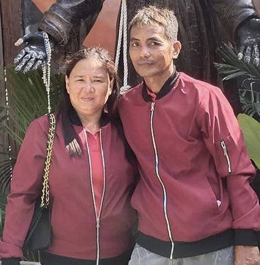
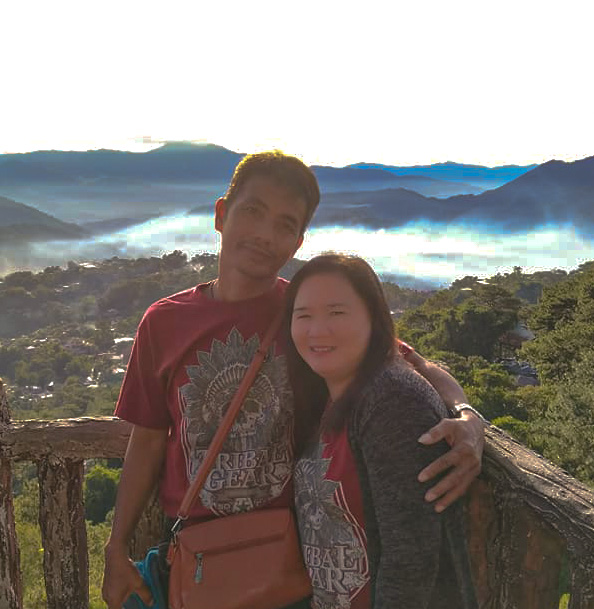

IN LOVING MEMORY
OF
Reniel Ferrera Salvacion
When someone you love becomes a memory, the memory becomes a treasure.
-Unknown
Ever-Present Love: The Eternal Bond of Those We Cherish
Those we love don't go away, they walk beside us every day. Unseen, unheard, but always near, still loved, still missed, and very dear.
Finding Comfort in Memories
Although it's difficult today to see beyond the sorrow, may looking back in memory help comfort you tomorrow."
- Unknown



The pain of loss is a testament to the depth of our love. As we navigate through the waves of grief, we hold onto the memories we shared, finding solace in the knowledge that love transcends the boundaries of life and death.
The song is ended, but the melody lingers on
- Irving Berlin